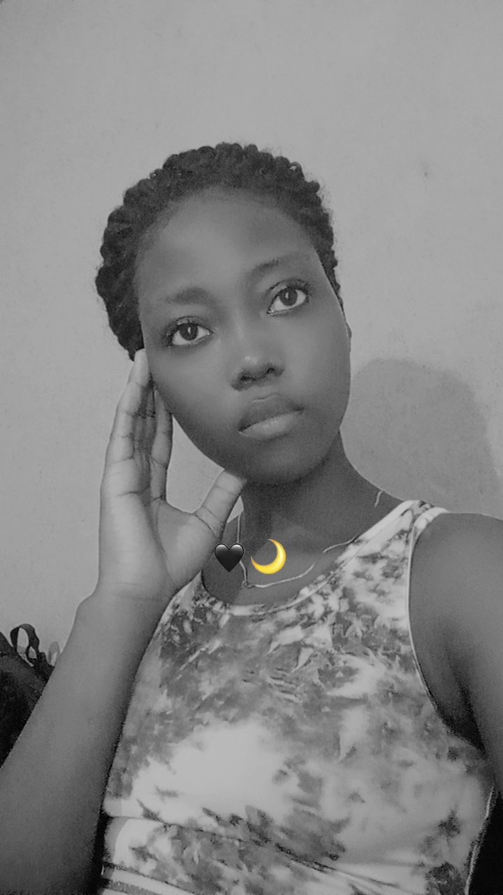

Nom : SEGLA
Prénom : Ingrid Sèkloka Viscentia Praxède
Âge : 17 ans
Statut : Étudiante (Née le 24 Juin 2008)

En dehors de mes études universitaires, j'aime consacrer mon temps libre à diverses activités passionnantes qui enrichissent mon quotidien. La musique occupe une place centrale dans ma vie ; elle m'accompagne à chaque instant, m'aide à me concentrer ou à m'évader selon les rythmes et les mélodies. Je suis également une grande passionnée de séries télévisées, aimant suivre des intrigues captivantes et des développements de personnages complexes pendant mes moments de détente. La lecture d'ouvrages scientifiques et de romans est une autre de mes occupations favorites, me permettant d'acquérir de nouvelles connaissances tout en m'évadant à travers des récits imaginaires. Par ailleurs, j'ai un goût prononcé pour les voyages ; découvrir de nouveaux horizons, explorer des cultures différentes et aller à la rencontre de l'autre est une véritable source d'inspiration. Enfin, je m'adonne régulièrement au dessin, une activité artistique qui me permet d'exprimer librement ma créativité, de canaliser mes émotions et de poser sur papier ma vision personnelle du monde qui m'entoure. L'ensemble de ces centres d'intérêt contribue grandement à mon épanouissement personnel, à mon ouverture d'esprit et stimule continuellement ma curiosité intellectuelle face aux évolutions du monde numérique qui me fascine tant.
Ceci est mon premier test, et je suis vraiment heureuse d'écrire ma première page web. Je deviendrai certainement une grande Webmaster dans quelque temps.
Voici ce qui est sans aucun doute une des plus connues fables de La Fontaine :
Maître Corbeau, sur un arbre perché,
Tenait en son bec un fromage.
Maître Renard, par l'odeur alléché,
Lui tint à peu près ce langage :
"Hé ! bonjour, Monsieur du Corbeau.
Que vous êtes joli ! que vous me semblez beau !" Sans mentir, si votre ramage
Se rapporte à votre plumage,
Vous êtes le Phénix des hôtes de ces bois."
A ces mots le Corbeau ne se sent pas de joie ;
Et pour montrer sa belle voix,
Il ouvre un large bec, laisse tomber sa proie.
Le Renard s'en saisit, et dit : "Mon bon Monsieur,
Apprenez que tout flatteur
Vit aux dépens de celui qui l'écoute :
Cette leçon vaut bien un fromage, sans doute. "
Le Corbeau, honteux et confus,
Jura, mais un peu tard, qu'on ne l'y prendrait plus.